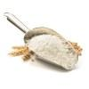
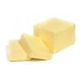
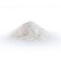
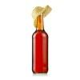

Pâte à crêpes
Temps : 45 min
Niveau : très facile
Coût : bon marché
Ingrédients
Pour 20 crêpes environ.
- 4 oeufs

- 400 g de farine
- 1 l de lait demi-écrémé
- 2 cuillères à soupe d'huile

- 60 g de beurre fondu

- 4 cuillères à soupe de sucre

- 6.5 cl de rhum
Ustensiles
1 louche, 1 saladier.
Préparation
- Mettre la farine dans une terrine et former un puits.
- Y déposer les oeufs entiers, le sucre, l'huile et le beurre.
- Mélanger délicatement avec un fouet en ajoutant au fur et à mesure le lait.
- La pâte ainsi obtenue doit avoir une consistance d'un liquide légèrement épais.
- Parfumer de rhum.
- Faire chauffer une poêle antiadhésive et la huiler très légèrement.
- Y verser une louche de pâte, la répartir dans la poêle puis attendre qu'elle soit cuite d'un côté avant de la retourner. Cuire ainsi toutes les crêpes à feu doux.
Retour